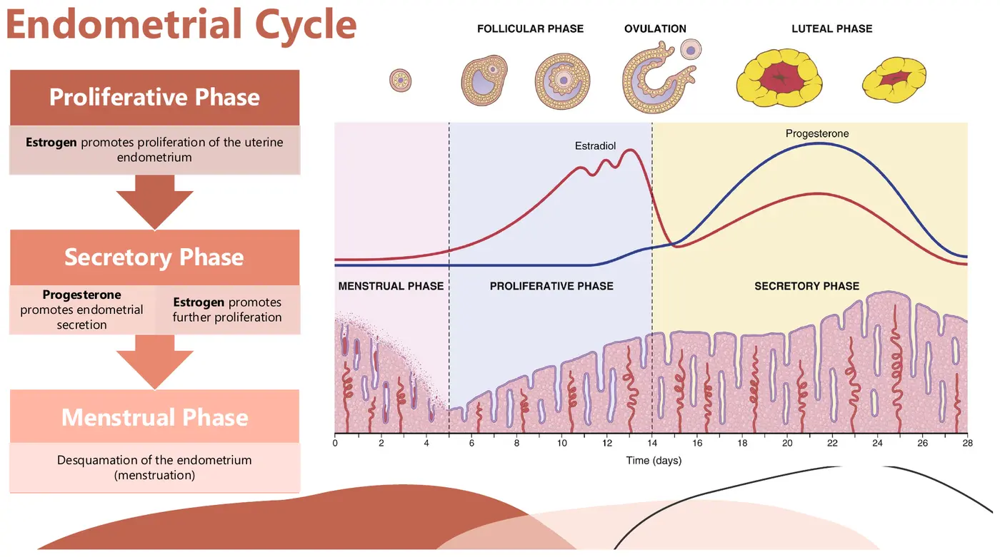
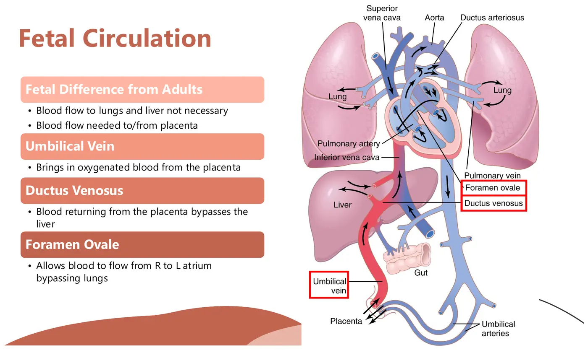

Courses › Human Physiology › Module 14
Human Physiology · 6131
Module 14 — The Reproductive System
Topics: 14.1 Male • 14.2 Female • 14.3 Reproductive Pathology • 14.4 Pregnancy & Fetal Development • 14.5 Pregnancy Pathology • Sync: Joon & Ari across the lifespan
📖 How to Use These Notes
- Best used with the lecture playing — keep these open, follow along, and add your own notes as you watch
- Lecture banners mark the start of each topic and run in the same order as the videos
- 🎙 Callouts = direct insights from the instructor's transcript
- ★ Tips = exam-relevant content or things the instructor told you to prepare
- Figures are taken directly from the module's slide decks
- Each topic ends with its own Quick-Reference Glossary
- Written from last year's recordings — if a lecture has been re-recorded or resequenced, Canvas wins
- Lectures by Dr. Evan Andreyo; anatomy was covered in your anatomy coursework — this is the physiology and the hormones
- This is the FINAL content module of the course: Module 15 has no new content (Muddiest Points board + individual AND team final exams) — and a reproductive-system quiz closes out the content (check Canvas for the due date)
- The engine everywhere: hypothalamic GnRH → anterior pituitary LH + FSH → gonads → testosterone or estrogen/progesterone
- The sync case follows Joon and Ari from puberty through pregnancy to age 51/48 (prostate, menopause) — worked at the end
TOPIC 14.1
The Male Reproductive System
- Spermatogenesis (begins ~age 13, continues lifelong with gradual decline): in the seminiferous tubules, Sertoli cells shepherd germ cells — spermatogonium (46 chromosomes) → spermatocytes → spermatids → spermatozoa (23 chromosomes), half carrying X and half Y. Route: testes → epididymis → vas deferens → past the bladder through the prostate.
- The prostate's job: adds a thin, milky, alkaline fluid that bulks semen and neutralizes the acidic uterine/fallopian environment (which exists to kill infections — and would kill sperm too). File this away for the pathology section.
- Hormonal chain: GnRH (hypothalamus) → LH + FSH (anterior pituitary) → Leydig cells make testosterone and Sertoli cells drive sperm development; growth hormone is co-required (without it, sperm production fails → infertility). Testosterone spikes in mid-gestation, briefly after birth, then goes quiet until puberty.
- What testosterone does at puberty: genital development, hair growth, laryngeal hypertrophy (voice drop), muscle mass (protein formation/retention), bone matrix growth (the growth spurt), raised basal metabolic rate (the teenager who eats everything), more red cells + blood volume. Androgens from the adrenals exist in both sexes but drive <5% of masculine change.
TOPIC 14.2
The Female Reproductive System
- Oogenesis: a female is born with ALL her oocytes — 1–2 million at birth — and no more are made. Same GnRH → LH/FSH chain fires at puberty (ages ~9–12, menarche ~11–15), but here the output is cyclical, producing an ~20-fold rise in estrogen (+ progesterone from the corpus luteum).
- Estrogen's résumé: genital and breast development, uterine growth, infection resistance, protein deposition, modest metabolic-rate rise, some fat deposition — and critically, bone growth and calcium retention (why estrogen loss ⇒ osteoporosis risk). Progesterone partners on genital/uterine development.
The two synchronized cycles (~28 days; range 20–45)
| OVARIAN CYCLE | ENDOMETRIAL CYCLE |
|---|---|
| Follicular phase: LH/FSH swell a follicle around one ovum (one at a time, on purpose); the follicle pours out estrogen | Proliferative phase: follicular estrogen (estradiol) thickens the endometrium, readying it for implantation |
| Ovulation (~day 14): an FSH rise capped by a huge LH spike ejects the ovum toward the fallopian tube — a fast phase | Secretory phase: corpus-luteum progesterone adds vascularity and stockpiles glycogen + lipids — packed lunch for a possible embryo |
| Luteal phase: the spent follicle becomes the corpus luteum ('yellowing'), secreting progesterone + estrogen + inhibin before degenerating | Menstrual phase: no implantation → estrogen + progesterone collapse → the endometrium sheds over ~4–7 days, and the cycle restarts |

- Feedback quirk: estrogen runs BOTH loops — early on it feeds back positively (more LH/FSH → more estrogen; activin helps), then past a threshold it flips inhibitory (with inhibin) to close the cycle down.
- Menopause (~40–50): the oocyte supply runs out → estrogen production collapses → nothing left to inhibit LH/FSH, which spike while estrogen craters. Consequences below.
TOPIC 14.3
Reproductive Pathology — a Screening-First Tour
| Condition | What to know |
|---|---|
| Amenorrhea | Absent menstruation. Normal causes: pregnancy, some birth control. Concerning causes: genetic/hormonal conditions and — the PT-relevant one — stress and low energy availability (RED-S): caloric deficit shuts the cycle down → menopause-like symptoms in a teenage runner, early bone-density loss (osteopenia/osteoporosis), infertility risk, blunted pubertal growth. Ask athletes about their cycle — it's a vital sign |
| Endometriosis | Endometrial tissue growing OUTSIDE the uterus (fallopian tubes, ovaries, beyond) — up to ~10–20% of reproductive-age women. That tissue still cycles: grows, bleeds, and sheds where it shouldn't → pain, bleeding, infertility. Presents to PT as "abdominal or low back pain" — screen: does it track the menstrual cycle? Pain with intercourse? |
| Benign prostatic hyperplasia | NOT cancer (but a predisposition): gradual prostate tissue growth from ~age 50 squeezes the urethra → urinary frequency, hesitancy, nocturia |
| Prostate cancer | The most common cancer in men, typically 50+, usually starting in the prostate periphery — hence digital exams at 50, biopsy on suspicion. Treatment: prostatectomy, chemo, radiation. The danger is metastasis: sacrum/spine (low back pain mimic!), rectum, and lymph nodes |
| Breast cancer | The most common cancer in women — 1 in 8 lifetime, mostly postmenopausal. Lymphatic proximity makes metastasis (lung, liver, adrenals, bone) the stakes; survival falls steeply with stage. Screening: self + physician exams, mammogram from ~40. Treatment: lumpectomy or mastectomy ± lymph node removal — PT sees the aftermath: upper-extremity lymphedema, plus chemo/radiation fatigue |
TOPIC 14.4
Pregnancy & Fetal Development
From fertilization to placenta
- Fertilization (usually in the fallopian tube): ONE sperm enters the ovum, a chemical shield locks all others out; 23 + 23 chromosomes = 46, the sperm's X or Y deciding sex. Zygote → blastocyst → implants into the prepared endometrium (trophoblastic cells receive it; the stockpiled glycogen/lipids feed it until the placenta — "the tree of life" — takes over gas/nutrient/waste exchange, working like a pulmonary membrane). Twins: one zygote splitting = identical; two ova fertilized = fraternal.
- Hormone shifts: embryonic hCG blocks menstruation immediately; ovaries (corpus luteum) + placenta pour out rising estrogen, progesterone, and relaxin (uterine growth, breast/duct development, pelvic ligament relaxation); pituitary prolactin climbs (milk prep) while LH/FSH are suppressed; aldosterone retains extra sodium/water; the thyroid enlarges up to 50% (metabolic rate +~15%); PTH rises — pulling calcium from the mother's bones for the fetus.
Maternal changes and the PT lens
- Weight +25–35 lb (fetus, fluid, placenta, breast tissue, fat, water); blood volume +~30% (1–2 L extra); respiration up while diaphragm and bladder capacity shrink (the fetus takes the room) → fatigue, dyspnea, urinary frequency; GFR and urine output climb; supine intolerance (fetal compression of the great vessels); pelvic-ligament laxity → pelvic pain.
- Nutrition needs: more calories, calcium (spare mom's skeleton), protein, vitamin K (newborn clotting through birth trauma), vitamin D, and iron (deficiency is common — supplements often needed).
Exercise during pregnancy — the evidence is emphatic
- Prevents excessive weight gain, gestational diabetes, and preeclampsia
- Improves mood, reduces low back pain, reduces C-section rates, shortens labor, maintains cardiorespiratory fitness
- Contraindications and prescription parameters come in later coursework — the headline now: exercise is GOOD for pregnant patients
Fetal milestones and birth
- Stages: germinal (conception–week 2) → embryonic (weeks 3–8) → fetal (week 9–birth). First trimester: heartbeat by ~week 4, neural tube forms, most organs begin (before mom even knows), blood cells ~week 6. Second: bones ossify, GI moves, kidneys start. Third: massive length/weight gain. Fetal circulation bypasses liver (ductus venosus) and lungs (foramen ovale) since the placenta does that work — both must close at birth (cardiopulmonary pathology when they don't).

- Parturition: late-term estrogen overtakes progesterone (progesterone inhibits contractions; estrogen promotes them) → the fetal head presses the cervix → oxytocin released → stronger contractions → more pressure → more oxytocin — a textbook positive feedback loop (~week 40; twins ~19 days earlier from extra uterine stretch). Postpartum: estrogen/progesterone crash lifts their brake on milk; prolactin drives secretion and oxytocin drives letdown.
TOPIC 14.5
Pathology in Pregnancy & Development
| Condition | Mechanism & management |
|---|---|
| Chromosomal abnormalities | Structural (missing pieces) or numeric (one or three instead of two). Trisomy 21/Down syndrome (autosome): intellectual disability, characteristic features, organ defects, infertility. Monosomy X/Turner's: one X → ovaries can't nurture oocytes → no estrogen → no secondary sex characteristics. XXY/Klinefelter's: Y present but testosterone/sperm production fails → no secondary male characteristics |
| Ectopic pregnancy | Implantation outside the uterus — almost always the fallopian tube (endometriosis is a classic setup). Unsalvageable and dangerous: tubal rupture risks fatal hemorrhage; managed with medication or surgery |
| Preeclampsia | Insufficient placental blood supply → the placenta hormonally demands more → maternal hypertension, edema, proteinuria, typically late pregnancy. Monitored closely (BP + urine protein); early induced delivery when needed |
| Gestational diabetes | Placental hormones interfere with maternal insulin → first-time hyperglycemia, usually mid-pregnancy. Fetal consequences: high birth weight (harder delivery, C-section risk), respiratory distress, later diabetes predisposition. Managed with monitoring, diet, activity |
| Pregnancy-related pelvic/low back pain | Relaxin-loosened pelvic ligaments + abdominals stretched into passive insufficiency + anterior weight pulling the lumbar spine into lordosis + round-ligament traction as the uterus grows. PT tools: abdominal recruitment coaching, SI belt for passive support |
| Postpartum sequelae | Pelvic organ prolapse (esp. vaginal delivery — monitor, pelvic-floor PT, or surgery), stress urinary incontinence (stretched pelvic floor — pelvic-floor strengthening is prime PT territory), lingering abdominal insufficiency, and postpartum depression — a clinical diagnosis beyond "baby blues" (risks: prior anxiety/depression, low social support, traumatic birth). Screen, support, refer |
SYNC SESSION
Joon & Ari Through the Lifespan
Round 1 — Puberty and the cycle
- Pubertal physiology: GnRH → LH/FSH → testosterone (muscle, bone/growth spurt, voice, hair, BMR, red cells) or estrogen (breasts, menarche, bone growth + calcium retention, protein and fat deposition). Pathologies that disrupt it: RED-S/low energy availability, genetic conditions (Turner's, Klinefelter's), endocrine disease. PT decision-making: growth-spurt awkwardness = sensorimotor recalibration windows; open growth plates change loading choices; screen menstrual regularity in young athletes.
- Ovarian cycle = follicular → ovulation (day ~14, LH spike) → luteal; endometrial cycle = proliferative → secretory → menstrual — the follicle's estrogen and the corpus luteum's progesterone are the levers linking the two.
Round 2 — Pregnancy (Joon 35, Ari 32)
- Changes: hCG, estrogen/progesterone/relaxin climb; +25–35 lb; blood volume +30%; thyroid/metabolism up; diaphragm/bladder compressed; ligaments lax. Pathologies: preeclampsia, gestational diabetes, ectopic pregnancy, chromosomal abnormalities. PT considerations: avoid prolonged supine, expect fatigue/dyspnea, support the pelvis (belt, core work), and keep them exercising — it prevents the very complications above.
Round 3 — Joon at 51 and Ari at 48
- Joon (urinary frequency, hesitancy, nocturia, mild pelvic discomfort): the prostate's normal job is adding alkaline fluid to semen; sitting around the urethra, BPH or prostate carcinoma obstructs flow — and because prostate cancer metastasizes to the sacrum and spine, unexplained low back pain + urinary symptoms in a 50+ male is a referral, not a hot pack.
- Ari (irregular then skipped cycles, night sweats/hot flashes, irritability, poor concentration): perimenopause/menopause — oocytes depleted → estrogen collapses → LH/FSH spike; vasomotor symptoms and mood/cognition changes follow. PT lens: falling estrogen = falling bone density → prioritize resistance and weight-bearing exercise, calcium/vitamin D adequacy, and know that hormone replacement is one medical option — screening-age adults also need their mammograms (40+) and prostate checks (50+) on the radar.
Module 14 — Quick-Reference Glossary
| Term | Definition |
|---|---|
| GnRH → LH/FSH | The hypothalamic-pituitary ignition for both sexes, silent until puberty |
| Sertoli / Leydig cells | Sperm nursemaids / testosterone factories |
| Corpus luteum | The post-ovulation follicle — progesterone, estrogen, inhibin |
| Follicular / ovulation / luteal | The ovarian cycle; proliferative / secretory / menstrual = the endometrial one |
| hCG | Embryonic hormone that halts menstruation (and turns pregnancy tests positive) |
| Relaxin | Pregnancy's ligament looser — pelvic mobility for birth, pelvic pain in the meantime |
| Ductus venosus / foramen ovale | Fetal liver and lung bypasses — must close at birth |
| Parturition | Birth: an oxytocin positive-feedback loop |
| Prolactin + oxytocin | Milk secretion + milk letdown, postpartum |
| BPH | Benign prostatic hyperplasia — the non-cancerous urinary squeeze of age 50+ |
| Menopause | Oocytes out → estrogen down, LH/FSH up → vasomotor symptoms + bone loss |
| RED-S amenorrhea | Energy deficit shutting down the cycle — an athlete red flag PTs must screen |